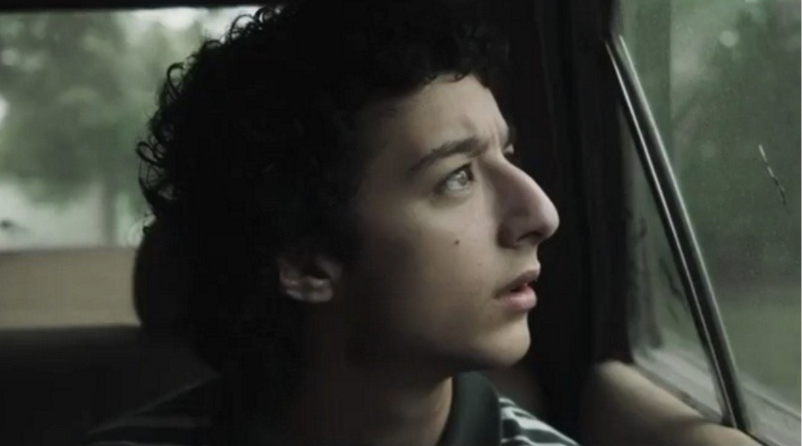

Horror psicológico y paranormal santafesino
"El largometraje dirigido por Mauro Iván Ojeda fue filmado íntegramente en la localidad santafesina de Alvear, con equipo técnico y elenco rosarinos. El film producido por Doménica Films, Reina de Pike e Inspiria podrá verse en cines del país el jueves 16 de abril."

El próximo 16 de abril se estrenará en salas de cine del país la película Memoria de una Madre, el largometraje de horror psicológico y paranormal producido por Doménica Films, Reina de Pike e Inspiria. Dirigida por Mauro Iván Ojeda, la cinta fue filmada íntegramente en la vecina localidad de Alvear y su equipo técnico y de producción está integrado mayormente por rosarinos.
La producción contó con el mismo equipo de departamento de Cuando acecha la maldad, de Demian Rugna, el fenómeno más exitoso del cine de terror argentino de los últimos años. Según se detalla en la información de prensa, "las primeras proyecciones de mercado señalan que Memoria de una Madre logra una atmósfera incluso más aterradora y asfixiante" que el mencionado film.
La trama
Memoria de una madre sigue a Genaro, un niño que tras ser adoptado conoce a sus nuevos hermanos, Nuria y Samuel. Pronto, Genaro sospecha que su nueva familia sufre un asedio paranormal que los mantiene en un estado de angustia y pesadumbre. Ambos hermanos se unirán ante una presencia maligna que trae consigo una serie de sucesos siniestros.
Ojeda viene de dirigir La funeraria, adquirida por la plataforma estadounidense Shudder y seleccionada en festivales internacionales de élite como Sitges y FrightFest. En esta nueva película, el realizador propone "un relato de horror anclado en un drama áspero y personajes portadores de gran dolor".